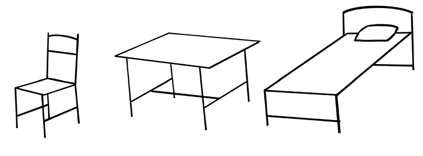

Anza kwa kuchora maumbo rahisi. Chora maumbo mbalimbali kama vile duara, miraba, na mistari ambayo inajenga msingi wa michoro mingine.
Chora mistari myepesi ya mchoro wa kitu unachotaka kuchora. Hii itakusaidia kufuta na kurekebisha kwa urahisi.
Koleza mchoro wako. Tumia penseli kukoleza mchoro wako ili uweze kuonekana vizuri.
Pitia upya mchoro wako. Unatakiwa kupitia upya mchoro uliouchora ili kuboresha mistari kwa kufuta alama zisizo za lazima ili kuboresha mwonekano wa jumla.
Matumizi ya mistari katika kuchora picha njiti
Picha njiti ni taswira za watu au vitu zinazochorwa kwa mstari pekee. Mistari hiyo ni kama vile mistari ya ulalo, wima na iliyopinda. Huu ni uchoraji wa awali kwa yeyote anayeanza kujifunza uchoraji. Kielelezo namba 1 kinaonesha picha njiti zilizochorwa kwa kutumia penseli.
Vifaa vya kuchorea
Vifuatavyo ni baadhi ya vifaa ambavyo hutumika katika kuchora picha njiti:
Penseli;
Kichongeo cha penseli;